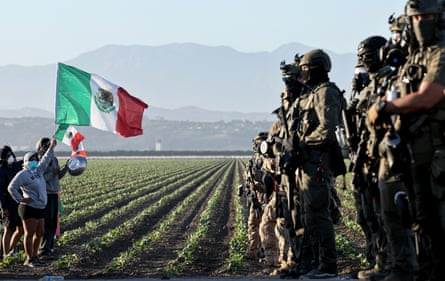
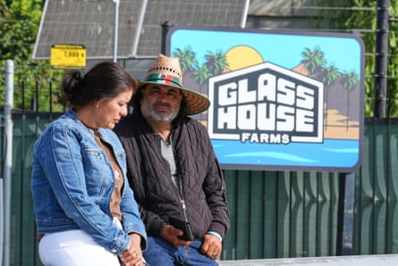
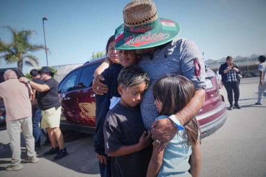

A farmworker died Friday from injuries that he sustained a day earlier in raids on two California cannabis farm sites as US immigration authorities confirmed they arrested 200 workers after a tense standoff with authorities.
Jaime Alanis’s death was confirmed in a social media post by the United Farm Workers advocacy group. “We tragically can confirm that a farm worker has died of injuries they sustained as a result of yesterday’s immigration enforcement action,” the post read .
The Department of Homeland Security said in a statement that authorities executed criminal search warrants in Carpinteria and Camarillo, California , on Thursday. They arrested immigrants suspected of being in the country illegally and there were also at least 10 immigrant children on site, the statement said.
Four US citizens were arrested for “assaulting or resisting officers”, the department said. Authorities were offering a $50,000 reward for information leading to the arrest of one person suspected of firing a gun at federal agents. At least one worker was hospitalized with grave injuries.
During the raid, crowds of people gathered outside Glass House Farms at the Camarillo location to demand information about their relatives and protest immigration enforcement. A chaotic scene developed outside the farm that grows tomatoes, cucumbers and cannabis as authorities clad in helmets and uniforms faced off with the demonstrators. Acrid green and white billowing smoke then forced community members to retreat.
Federal agents block people protesting an Ice immigration raid at a cannabis farm near Camarillo, California, on 10 July 2025. (Photo by Mario Tama/Getty Images)Photograph: Mario Tama/Getty Images
Glass House, a licensed California cannabis grower, said in a statement that immigration agents had valid warrants. The company said workers were detained and it is helping provide them with legal representation.
“Glass House has never knowingly violated applicable hiring practices and does not and has never employed minors,” the statement said.
It is legal to grow and sell cannabis in California with proper licensing. State records show the company has multiple active licenses to cultivate cannabis.
On Friday, about two dozen people waited outside the Camarillo farm to retrieve the cars of loved ones and speak to managers about what happened. Relatives of Jaime Alanis, who has worked picking tomatoes at the farm for 10 years, said he called his wife in Mexico during the raid to tell her immigration agents had arrived and that he was hiding with others inside the farm.
“The next thing we heard was that he was in the hospital,” Juan Duran, Alanis’ brother-in-law, said in Spanish, his voice breaking.
Elizabeth Strater, national vice president of the United Farm Workers, said Alanis was injured after a 30-foot fall from a building during the raid.
Juan Duran, and his wife, no name given, wait outside Glass House Farms, where a relative was injured during a previous day immigration raid, on 11 July 2025, in Camarillo, California. (AP Photo/Damian Dovarganes)Photograph: Damian Dovarganes/AP
After immigration agents arrived at Glass House’s farm in Camarillo on Thursday morning, workers called family members to let them know authorities were there. Relatives and advocates headed to the farm about 50 miles (80km) north-west of downtown Los Angeles to try to find out what was going on, and began protesting outside.
Federal authorities formed a line blocking the road leading through farm fields to the company’s greenhouses. Protesters were seen shouting at agents wearing camouflage gear, helmets and gas masks. The billowing smoke drove protesters to retreat. It wasn’t clear why authorities threw the canisters or if they released chemicals such as teargas.
Ventura county fire authorities responding to a 911 call of people having trouble breathing said three people were taken to nearby hospitals.
At the farm, agents arrested workers and removed them by bus. Others, including US citizens, were detained at the site for hours while agents investigated.
The incident came as federal immigration agents have ramped up arrests in southern California at car washes, farms and Home Depot parking lots, stoking widespread fear among immigrant communities.
The mother of an American worker said her son was held at the worksite for 11 hours and told her agents took workers’ cellphones to prevent them from calling family or filming and forced them to erase cell phone video of agents at the site.
People embrace outside Glass House Farms, a day after an immigration raid on the facility, on 11 July in Camarillo, California. (AP Photo/Damian Dovarganes)Photograph: Damian Dovarganes/AP
The woman said her son told her agents marked the men’s hands with ink to distinguish their immigration status. She spoke to the Associated Press on condition of anonymity because she feared reprisals from the government.
United Farm Workers said in statement that some US citizens are not yet accounted for.
Maria Servin, 68, said her son has worked at the farm for 18 years and was helping to build a greenhouse. She said she spoke to her son, who is undocumented, after hearing of the raid and offered to pick him up.
“He said not to come because they were surrounded and there was even a helicopter. That was the last time I spoke to him,” Servin, a US citizen, said in Spanish.
She said she went to the farm anyway but federal agents were shooting teargas and rubber bullets and she decided it was not safe to stay. She and her daughter returned to the farm Friday and were told her son had been arrested Thursday. They still don’t know where he is being held.
“I regret 1,000 times that I didn’t help him get his documents,” Servin said.